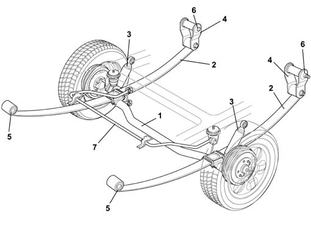

Introduction - REAR SUSPENSION
- Path
- Descriptions > 44 SUSPENSION AND WHEELS > 4420 REAR SUSPENSION > Introduction - REAR SUSPENSION
- Kind
- system description
- Applies to
- all engines; all production periods
- Interactive page
- https://sloeber94.github.io/elrnDB-fDbl/en/#/2585413
Applies to: all engines; all production periods
The rear suspension is the rigid axle type connected to the bodyshell by means of longitudinal leaf springs fitted with Cellast end of travel buffers.
The advantages of this solution are:
- simple structure and therefore easy to maintain
- economical construction
- constant wheel camber irrespective of the acting load.
On the Panorama version there are also some solutions aimed to improving driving comfort:
- the adoption of an anti-roll bar connected to the bodyshell by means of flexible mountings and secured to the rigid axle by two levers at the end. This solution makes it possible to reduce the roll effect of the bodyshell at the same time guaranteeing improved road holding.
- the use of leaves with specific tapering makes it possible to reach higher flexibility values for the leaves (0.55 m/kg) compared with those for the van version (0.42 m/kg).
- the use of a sliding type front bush instead of the traditional type making it possible to reduce the effects of rebound and bumping.

1, Rear axle 2, Leaf 3, Shock absorber 4, Shackle 5, Front support (fixed to bodyshell) 6, Rear support (fixed to bodyshell) 7, Anti-roll bar (Panorama versions only)
Applies to: all engines; all production periods
The rigid axle solution does not allow for adjustments of the wheel geometry (camber, caster, toe in); if, whilst checking, the recommended figures and those given below do not correspond, check the bodyshell and the axle and, if necessary, replace it.
Rear axle geometry | Value (degrees) |
|---|---|
Rear wheel toe in | 0 ± 1˚ |
Rear wheel camber | 0 ± 1° |